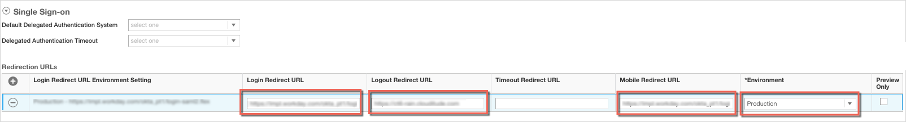
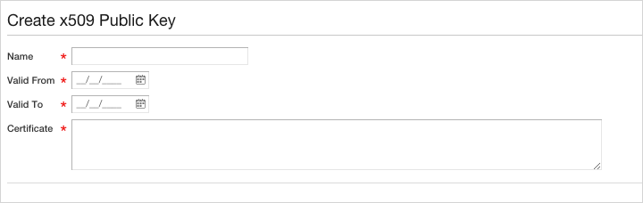
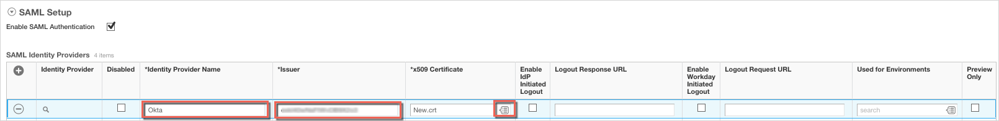
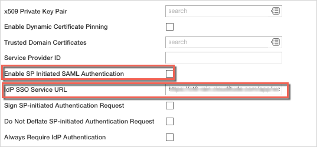

Enabling SAML will affect all users who use this application, which means that users will not be able to sign-in through their regular log-in page, if you enable SP initiated SSO. Users will only be able to access the app through the Okta service.
Backup URL
Workday provides a backup log-in url where users can sign-in using their normal username and password in the following format: [Your Workday URL]/login.flex?redirect=n
If you log into: https://acme.workday.com/login-auth.html, [Your Workday URL] is: https://acme.workday.com.
Sign in to Workday with administrator privileges.
Navigate to the Edit Tenant Setup - Security page. To do this search for Edit Tenant Setup in the home screen search box, then click the Edit Tenant Setup - Security link in the search results.
Scroll down to the Single Sign On section and expand it, if not already expanded.
Click on the plus icon underneath Redirection URLs to add a row. Then enter the following (see screenshot at end of step for reference):
Login Redirect URL: Enter the following:
[org URL]/login-saml2.flexLogout Redirect URL: Enter the following:
Sign into the Okta Admin dashboard to generate this value.Mobile Redirect URL: Enter the following:
[org URL]/login-saml2.flexEnter an Environment.

Scroll down to the SAML Setup section.
Check the Enable SAML Authentication box.
In the SAML Identity Providers table, enter the following (see screenshot at end of step for reference):
Identity Provider Name: Enter Okta.
Issuer: Enter the following:
Sign into the Okta Admin dashboard to generate this value.
x509 Certificate: Do the following:
Click the icon in the x509 Certificate field.
Click Create, then Create x509 Public Key in the dialog box.
In the Create x509 Public Key screen:

Enter a unique name for your certificate, for example, okta.cert.
Copy and paste the following into Valid From:Sign into the Okta Admin dashboard to generate this value.
Copy and paste the following into Valid To:Sign into the Okta Admin dashboard to generate this value.
Copy and paste the certificate listed below into the Certificate field:
Sign into the Okta Admin dashboard to generate this value.
Click OK to save your certificate and return to the Edit Tenant Setup - Security screen.

Copy and paste the following into IdP SSO Service URL:
Sign into the Okta Admin dashboard to generate this value.
Click OK to save your changes.